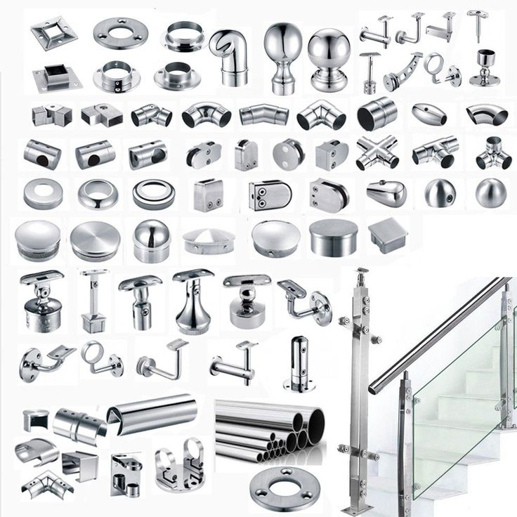

About Our Glass Fittings
At Tensorgrid Ltd, we supply a wide range of high-quality glass fittings designed to support modern glass installations with strength, safety, and style. Our fittings are engineered for durability and precision, making them ideal for both residential and commercial applications.
Whether for shower enclosures, partitions, or frameless systems, our fittings provide reliable performance and a sleek, contemporary finish.
Fitting Specifications
Key Features
- Durable and corrosion-resistant
- Modern, aesthetic design
- Easy installation and maintenance
- Compatible with various glass types
Shower Glass Fittings
Shower glass fittings are specially designed components used to install and secure glass panels in bathroom enclosures.
Available Components
- U-brackets
- U-channels
- Stainless steel (S.S) support pipes
- Shower strips (seals)
- L-brackets
- Square brackets
- Shower door handles (G-handles 225mm x 425mm)
Features
- Water-resistant and rust-proof
- Strong and durable materials
- Secure glass support
- Smooth and reliable operation
Applications: Shower cubicles, Bathroom partitions, Wet areas
Sliding Shower Fittings
Sliding shower fittings are used for shower enclosures with sliding glass doors, providing smooth and space-saving operation.
Components Include
- Rollers
- Tracks/rails
- Handles
- Stoppers
Features
- Smooth sliding mechanism
- Space-efficient design
- Quiet operation
- Modern aesthetic
Applications: Compact bathrooms, Shower cubicles, Residential and hotel bathrooms
Swing Door Shower Fittings
Swing door fittings are used for hinged shower doors that open inward or outward.
Components Include
- Hinges
- Handles
- Magnetic seals
- Support bars
Features
- Strong hinge support
- Smooth opening and closing
- Secure door alignment
- Elegant appearance
Applications: Frameless shower enclosures, Luxury bathrooms
Frameless Glass Fittings
Frameless fittings are designed to support glass installations without bulky frames, creating a clean and modern look.
Available Components
- Glass patches
- Floor springs
- Glass spacers / studs
- MAB brackets
- Spider fittings
Features
- Minimalist and modern design
- High-strength structural support
- Clean, seamless appearance
- Suitable for heavy glass installations
Applications: Glass partitions, Office enclosures, Shopfronts, Structural glass systems
Finishes Available
Our glass fittings come in a variety of premium finishes to match different interior styles:
Chrome Finish
- Classic and highly reflective
- Corrosion-resistant
- Suitable for modern and standard designs
Black Finish
- Bold and contemporary look
- Matte or glossy options
- Ideal for modern interiors
Gold Finish
- Luxurious and elegant appearance
- Perfect for premium spaces
- Enhances decorative appeal
Why Choose Our Glass Fittings?
- High-quality, durable materials
- Corrosion and rust resistant
- Precision-engineered components
- Available in multiple finishes
- Suitable for both frameless and framed systems